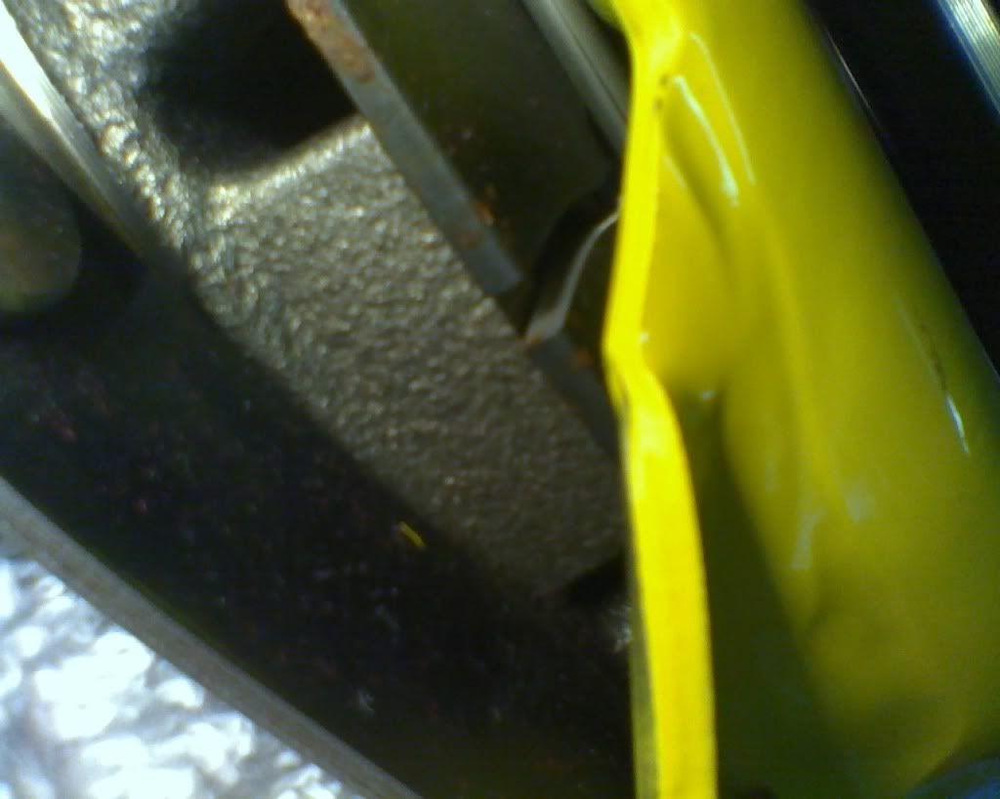
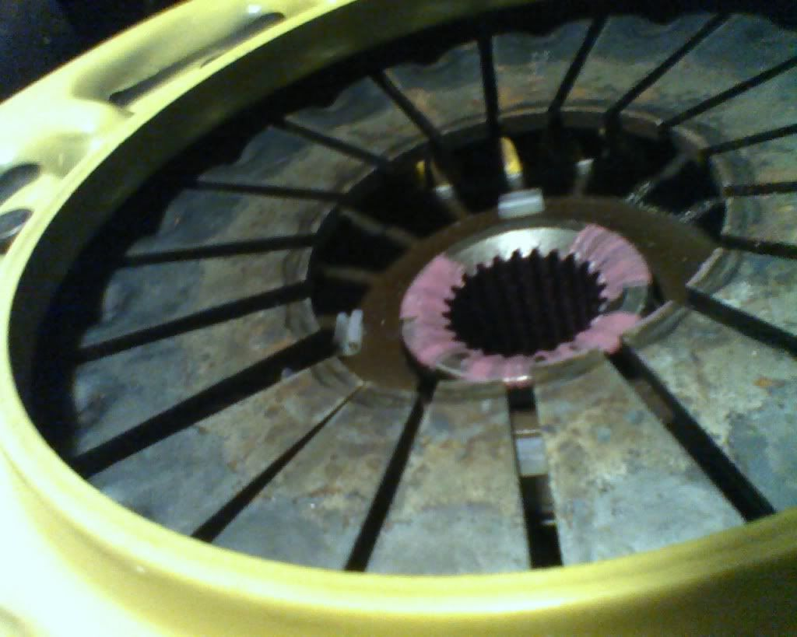
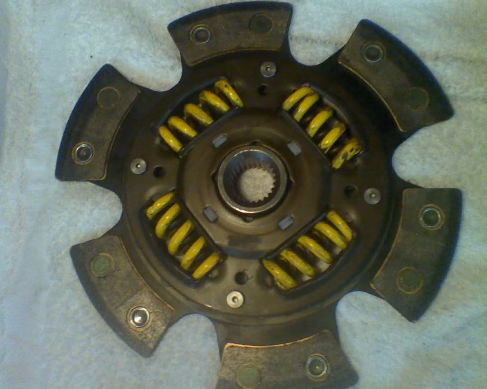

-
Re: New clutch UPDATE: PP Problems
Well i have a good feeling that it is indeed the straps because what you are describing is exactly what it is doing. Pretty sad if they did stretch from one launch ON THE STREET. :downBolt on, fast, z31. You can only pick two.
Old weaksauce numbers: 391hp/433tq

-
Re: New clutch UPDATE: PP Problems
my last act 4 puck went thru thousands of launches with 400ft/lbs, drove it till the rivets were almost to the flywheel(10k?) sucks to hear about your misfortune, they should warranty it though.Matt89 wrote: Well i have a good feeling that it is indeed the straps because what you are describing is exactly what it is doing. Pretty sad if they did stretch from one launch ON THE STREET. :downNearly all men can stand adversity, but if you want to test a mans character make him a moderator. -
Re: New clutch UPDATE: PP Problems
[quote]aceman wrote:yeah ACT and Spec are both good for warranty claims.Originally posted by Matt89Gone - 1988 Shiro
2004 BMW 330Ci
2005 BMW 330i
1991 Twin Turbo Z's (Red and Black)
http://www.E46Turbo330Ci.com -
Re: New clutch UPDATE: PP Problems
OK, just dropped the trans. Found the problem. The diaphram was cracked all the way through on one side. Tried to call ACT but they were closed. I have not decided if i even want to go with them again. If this happened after ONE launch on the street then i seriously doubt it will hold up on the track. OH, this PP came with 3 straps.


Bolt on, fast, z31. You can only pick two.
Old weaksauce numbers: 391hp/433tq
-
+1 on people just repeating what they here..
ACT's 6 puck is very streetable, ive said it many times.. its the unsprungs that are a pain in the cack on low rpm street driving..
Anyways.. Sorry to here matt. I havent had any issued with ym ACT and I've launched it hard quite a few times both on street and at the track. Might just be some bad luck, as stated ACT is very good with helping out their customers… Give it another shot and see what happens.1989 300ZX 2+2 N/A GLL
Auto to Manual Swap
NA2T Complete
-
http://i19.photobucket.com/albums/b194/ … C02145.jpg
welcome to the act sucking club. thats about 5 act clutch failures i herd so far since i broke mine last year after only a fewthousand miles. i try to post up this picture as much as possible to try to get people from buying act.
good luck trying to get a hold of them. they have poor customer service when it comes to making the extra effort.I hate wheel gap with a extreme passion

my build
viewtopic.php?t=2755
seller feedback
viewtopic.php?f=18&t=10430 -
I ran act plates for years with no issues. but maybe they product quality has changed. as well as i ran a spec plate that I had the straps break in half and they slung out carving grooves into my bellhousing.Praying.... -
Myself and many other local guys have had no issues with ACT's customer service..Andrew84zx wrote: http://i19.photobucket.com/albums/b194/kellerandrew/DSC02145.jpg
welcome to the act sucking club. thats about 5 act clutch failures i herd so far since i broke mine last year after only a fewthousand miles. i try to post up this picture as much as possible to try to get people from buying act.
good luck trying to get a hold of them. they have poor customer service when it comes to making the extra effort.
I said it in your other thread and I'll say it again, Solid hubs are not meant for street abuse, their meant for track use. Yes cars see more abuse on the track but the clutch sees the most abuse in traffic when your constantly starting from a dead stop, when properly driving once the car is in motion the clutch doesn't see nearly as much abuse as it does coming from a stand still. When you start from a dead stop with a solid hub disc there are no springs to compress and give a little bit of leniency as the disc around the hub catches up thus reducing the amount of stress the overall unit takes along with reducing chatter.
It also depends a lot on the driver and his driving style or lack there of if you will when it comes to using a solid hub on the street.1989 300ZX 2+2 N/A GLL
Auto to Manual Swap
NA2T Complete
-
so your saying a clutch is abused more in traffic than LAUNCHING at a well preped track at say…5000 rpms?Hmmm......interesting."If your car cant do a burnout from a 60mph rolling start, then your engine needs more work."
"Nitrous doesn't blow up motors; Idiots with nitrous blow up motors."
Shooting for 500whp

-
depends what kind of track you're talking about. If it's a track yes, if it's a strip, maybe not.

1988 300zxt. gt35, stance, etc. Wheels: Varrstoen ES2 18x9.5 et-13 225/40. 18x10.5 et0 245/40
1990 jetta vr6'd -
Yes and no. Think about how many times you start from a dead stop on a given day in a street car. Think about how many times you actually launch the car hard like that in a given week, in most peoples cases you will start from a dead stop more in a day on the street than the ammount of hard launches you will do at the strip in a month.85NA2T wrote: so your saying a clutch is abused more in traffic than LAUNCHING at a well preped track at say…5000 rpms?Hmmm......interesting.
Also think about how you start from a dead stop on the street versus how you start from a dead stop at the strip, on the street you tend to keep the rpms lower, slip it as best you can without riding the shit out of it to get a smooth start, most solid hubs tend to chatter and cause quite a bit of vibration in this scenario (again the drivers ability/style play a big part in that as well). Now think about when your launching at the track, your revs tend to be very high, you tend to either dump the clutch hard or slip it a little bit. Either way at those high revs the clutch tends to not chatter and vibrate as much, the initial shock may be hard, but the clutch doesnt slip or have any give in it like a sprung hub and grabs immediately, but thats what the clutch is designed for, to grab hard and fast and to not be slipped.
ACT even lists the solid hub as a track use clutch. In which case I would completely back them up 100% in their decision to not follow thru on a warranty when it was used on a street vehicle.
I know plenty of people who use ACT, both street discs, sprung pucked discs and solid hub discs.. All have had great success with them, but like many other companies have gotten a defected part, have not had an issue regarding warrenty or failed equipment.1989 300ZX 2+2 N/A GLL
Auto to Manual Swap
NA2T Complete
-
As the former driver of a 6 puck solid hub ACT I can say from personal experience that the solid hubs are not fun on the street.
The clutch was the greatest feeling most solid holding clutch I've ever driven and when racing I loved it! However the other 90% of the time I drove the car which was on the streets it was a massive pain. The clutch had the 1/4" sweet spot that it would slip but I'd have to have the revs up around 1500+ to keep it from chattering.
Again. Great clutch just not for the street. If I ever get a puck style again it will be sprung. -
[quote]Shady195 wrote:and i will say that your reasoning makes no sense. no way just taking off slowly breaks solid hubs. ill tell you what. if my re amaya twin disk setup on my rx7 starts breaking because of street use i will let everyone know that you are correct. it has solid hubs.Originally posted by Andrew84zx
once you get rid of that little stock turbo and start running some real boost 20-25 psi and actually have the power to break these things let us know if it holds up. they are rated at 630ft lbs according to their site. and i know i was not making any more that that. and if it was a track only clutch, it would be stated that it cant handle traffic soft take offs but, it can handle clutch dumps at the track.
i know of a few people that these clutches just failed on with not many miles, and was not even responded to by act. they do not hold up to what they are rated atI hate wheel gap with a extreme passion
my build
viewtopic.php?t=2755
seller feedback
viewtopic.php?f=18&t=10430 -
installer/user error?Andrew84zx wrote:
i know of a few people that these clutches just failed on with not many miles, and was not even responded to by act. they do not hold up to what they are rated at
I broke slave cylinders, pivot rods, driveshafts, axles, and transmissions. but at 400wtq i went thru thousands of 4-5k clutch dumps in 10k miles. the clutch came out in working but worn out order.Nearly all men can stand adversity, but if you want to test a mans character make him a moderator.

{kind=link}
Copyright © 2006–. All rights reserved. Privacy Policy